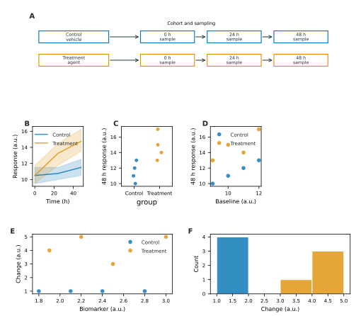
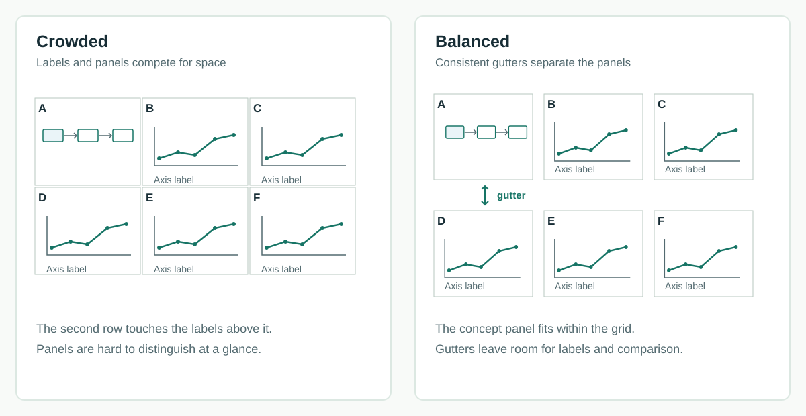

Showcase 01 / Experimental biology
A treatment
time course.
Build a figure that makes the study schedule clear, then show what happened at the group and individual levels.
The question
Start with the study schedule.
This six-panel storyboard moves from the treatment groups and sampling times to a response trajectory, endpoint observations and exploratory relationships. Download timecourse.csv and timecourse-endpoints.csv. The files contain fictional data for four subjects per group, measured at 0, 24 and 48 hours.

A–C occupy the first row and D–F the second. Panel A fits within the same grid as the plots, without squeezing out its labels.
Panel A / Concept figure
Draw the design as two swimlanes.
The step illustrations are schematics of the workflow.
- Place a Rectangle at the left of each lane for the group (Control and Treatment). If treatment conditions matter, describe them in the legend; keep all wording faithful to the real protocol.
- Add three same-sized sample boxes along each lane for 0, 24 and 48 h. Draw a Line with an arrowhead from the group box through the time points. Keep connector segments in the gaps between boxes, so they do not pass behind labels or through the shapes.
- Use Text inside the boxes for group and sample labels; align the rows and keep spacing, border colour and line weight consistent. Label the measured outcome below the lanes only if it applies at every time point.
Panels B–F / Show the evidence
Choose the plot for the question.
In ktfigure, draw a plot region, load the named CSV in Data, select the plot type and map the listed columns. Set other mapping fields to (none). Use Properties to apply the same font and colour mapping across panels. The illustration places one shared group key above the panels to keep observations unobstructed. Turn off individual legends in Grid & Legend and add the shared key in a vector editor after export.
The thumbnails below illustrate plot types; the synthetic data are available in the CSV files.
| Panel / question | Plot and mappings | Why this view? |
|---|---|---|
| B · How does response change? | timecourse.csv: line; X time_h, Y response, Hue group. Labels: Time (h), Response (a.u.). | Shows the group trajectory by aggregating observations at each time point. Individual paired trajectories are not shown. |
| C · How variable is the endpoint? | timecourse-endpoints.csv: strip; X group, Y endpoint. Label Y: 48 h response (a.u.). | Displays all four observations in each group. |
| D · Does baseline matter? | Endpoint file: scatter; X baseline, Y endpoint, Hue group. Label both axes in a.u. | Each point pairs one subject's baseline and endpoint values. |
| E · Is a biomarker associated with change? | Endpoint file: scatter; X biomarker, Y change, Hue group. Label the axes with units. | Shows observations for exploring a possible association; causal claims require more evidence. |
| F · How does change vary? | Endpoint file: histogram; X change, Hue group. Label X: Change from baseline (a.u.). | With only four subjects per group, bins can mislead. Prefer C to show individual values; use larger samples for distribution claims. |
change is the 48 h value minus baseline. Do not treat repeated time points as independent subjects. Describe sample size, biological versus technical replicates, uncertainty and statistical methods in the legend. Verify the line plot's uncertainty display before describing it; seaborn defaults can vary by version.
Layout lesson / Whitespace
Make the gaps do useful work.
Whitespace separates comparisons and gives axes and labels room to breathe. Too little makes the figure crowded; too much makes related panels look disconnected. Use spacing to clarify how the panels fit together.

- Plan the grid. Reserve a two-row, three-column area for A–F. Give the concept panel its own cell, shorten its labels to the essential groups and times, and move protocol details to the legend so the text stays readable.
- Align the plots. In Select mode, Shift-click the plot blocks in each row and use Align, then Distribute. Repeat for the columns; leave consistent gutters wide enough for axis labels. Align the concept panel's outer edge and its panel letter with the grid.
- Keep evidence clear. Place a single colour key in the margin, away from the points, and use the same group colours in every panel. Export to PDF or SVG, add the key and A–F labels in a vector editor, and check that no tick labels, legends or text touch neighbouring plots.
- Use space where it matters. Inspect at the journal's final width and adjust gutters or panel dimensions before reducing type. If the concept is too detailed to remain legible, simplify it or give it more room so every label stays visible.
Ready to check the final figure?
Open the publication checklist →